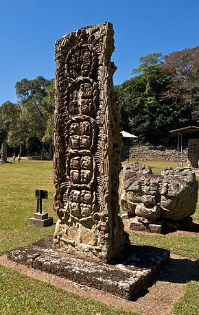

Parque Arqueológico de Copán Ruinas
Acceso: baja dificultad Patrimonio Mundial UNESCO
Descripción física: complejo de plazas, templos y acrópolis rodeado de bosque en un valle fresco, junto al pueblo colonial de Copán Ruinas, en el occidente del país.
Principales atractivos:
- Escalinata de los Jeroglíficos y Gran Plaza con estelas esculpidas
- Museo de Escultura Maya y túneles arqueológicos
- Observación de guacamayas rojas en el entorno del parque
Dificultad de acceso: carretera pavimentada hasta el pueblo; caminatas cortas y planas dentro del parque.
Solicitar este tour